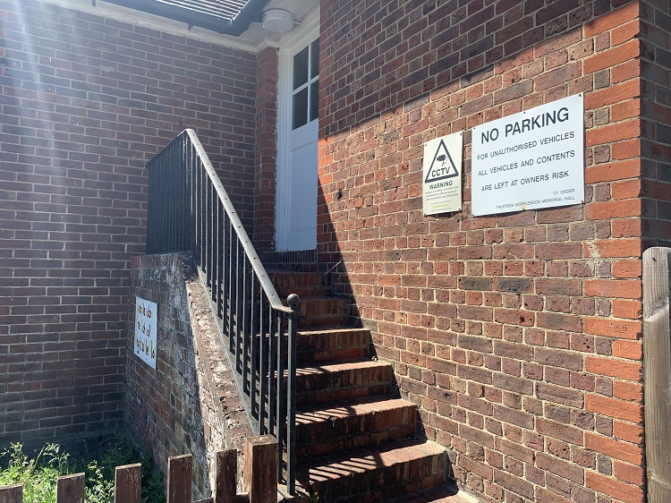

The Kelly Room, previously known as the Council Chambers consists of a 38.47 sqm located on the first floor,
accessible from the stairs at the front of the building to the right of the main
entrance. After, Mr Arthur Lindsay Kelly he was 2nd Chairman of WMH trustees , he also served 25 years as chairman
of Worplesdon Parish council. He was also Worplesdon Parish council for 55 years. ( My understanding probably the
longest serving WPC possibly the next is Sandra Morgan MBE 53 years currently) He died in 1963 he lived later part
of his life at Highclere just over the road from the hall between the cottages and the road named The Avenue and
before that at Hockley Lands on Burdenshott road recently renamed Hertford Park . A lifetime of public service to
Surrey County an alderman since 1947. His funeral was attended by officials of SCC, Guildford rural council of which
he had been a founder member of the executive, Woking magistrates court and hospital managements. He was a former
chairman of WMH trustees 1945-1959 who was also a former chairman of Worplesdon Parish council. Arthur Lindsay Kelly
1880-1963 was a very prominent figure all around in the Parish and St Mary’s church and community. He is seen in
Worplesdon football photographs and he was a cricketer.